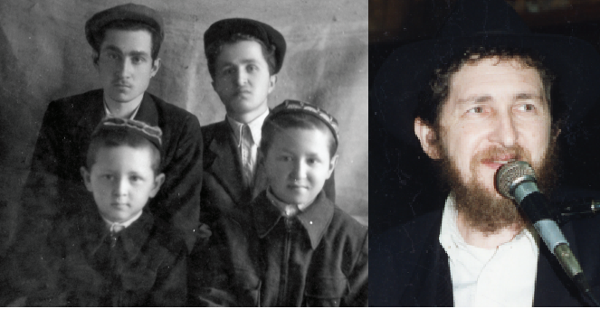

R’ Yitzchok Mishulovin – Experiencing a Whole New World
Already on the first day of his arrival in Eretz Yisroel, a young Yitzchok Mishulovin participated in an emotionally loaded farbrengen in Kfar Chabad with lots of l’chaim. Rabbi Zevin, who met him then, was impressed with the Lubavitcher bachur with the refined Chassidic appearance, who even knew how to learn properly.

In 5729, when the gates opened a little, many Lubavitcher Chassidim in Samarkand submitted requests to leave the country. In order to get a visa, they needed a letter with a request for unifying families, written by first-degree relatives who lived abroad.
Fortunately, my brother Michoel’s in-laws, Rabbi Aharon and Mrs. Chazan, were already in Eretz Yisroel and they sent a request for Michoel. My brother Eliyahu also left thanks to the fact that his mother-in-law’s sister was already living in Eretz Yisroel, and they submitted a request several times until they were finally allowed to leave in Shevat 5729.
At a certain point, my father “found a brother” who had disappeared in World War II and he sent papers with a request for us from Eretz Yisroel.
When my two brothers left Russia, we went to accompany them. A few days later, we were told to appear at the OVIR offices, but first, I had to go to the draft office to get an exemption. That wasn’t easy either because it involved examinations. I had actually undergone medical exams before, when I was officially drafted, and did fine, thanks to a bribe.
I bribed a doctor again, the one who was going to be on the medical committee, but when I got there, I saw that there were two doctors and I was sent to the other doctor, not the one I had bribed.
When I went in to see the doctor, I told him that I had heart trouble but he didn’t see anything in his exam. Miraculously, when he sent me to the nurse for her to take my blood pressure and some other test, I saw a Bucharian woman sitting there, our neighbor, whom I knew. I asked her to help me and she wrote down some medical data that got the doctor to give me an exemption on the spot. From there I went to OVIR and got my visa. That was a few days before Purim.
GREAT JOY IN KFAR CHABAD
I left Russia with my parents at the end of Adar. I took Chassidic manuscripts with me, to give to the Rebbe. They were manuscripts that I had obtained in several places in Russia. Some of them were maamarim and hanachos of maamarim from the Alter Rebbe and Mitteler Rebbe.
Before leaving for the airport, I went to Shlomo Hayitzhari, a Lubavitcher Chassid in Moscow who had a big food factory. I purchased a crate of Stolichnaya vodka from him. It’s a top-quality vodka that is exported and not available in Moscow.
When I arrived at customs at the airport, I placed all my bags on the counter and they asked about every single item. They noticed the mashke and when they asked me what it was, I said, “It’s Stolichnaya for you.” That is how the Chassidic manuscripts got through.
I experienced a moment of terror right before boarding. The plane was undergoing the final check before takeoff. My parents had already gone through customs when the clerk suddenly looked at me and said, “Do not continue; wait.” She went to another official, I did not know where she went, and my heart was pounding. About fifteen minutes passed that seemed like an eternity. She returned and allowed me to proceed. That day was 28 Adar and I remember it till today.
There were two other Lubavitchers on the plane from Moscow to Vienna, R’ Yoske Greenberg and his family, whom we knew in Samarkand. Of course, I did not know ahead of time that he would be on our flight. R’ Dovid Leib Chein and his two sons were also with us.
We did not say a word to one another because of our fear. Until the plane landed in Vienna, we were not confident that we had gotten out in peace.
In Vienna, the Jewish Agency reps met us. From there, we went to where all the immigrants stayed. People usually stayed a week or two but suddenly, we got word that we were continuing that same day! We did not even spend the night there.
When I arrived in Eretz Yisroel, it felt so good to have finally gotten there, to freedom. Despite this, it was most unpleasant when the Jewish Agency people came to welcome the guests from Russia and in our honor there was an immodest women’s dance. I was flabbergasted. Was this Eretz Yisroel?! It made a miserable impression on me; I felt very bad.
In Kfar Chabad I met an old friend who left two years earlier, R’ Shmuel Chaim Frankel. I told him that I wanted to go to the Rebbe, but perhaps I would stay in Kfar Chabad and only then go to the Rebbe. He urged me not to delay but to go directly to the Rebbe.
That evening there was a farbrengen with R’ Shlomo Chaim Kesselman in Kfar Chabad. He was mekarev me and sat me near him. Back then, Lubavitcher bachurim from Russia were an attraction that aroused a lot of emotion. Then we danced and R’ Avrohom Meizlich went with me to the old shul from where we took some mashke. It was very joyous.
When I said that I wanted to go to the Rebbe, the askanim R’ Shloimke Maidanchek, R’ Efraim Wolf, and R’ Zushe Posner got involved. They helped me obtain permission from the army to leave. It wasn’t simple since I didn’t have a passport yet, only an immigration certificate.
To speed things up, they needed Rabbi Shlomo Yosef Zevin to get involved. I went to his house and he was amazed that a yeshiva bachur had come from Russia who knew how to learn and who spoke a good Hebrew. They had been amazed at the airport too, by my fluent Hebrew. When they asked me where I knew Hebrew from, I said, from the Torah!
After arranging all the paperwork, a passport, visa, and exit permit, I went to the Rebbe.
WHEN THE REBBE CALLED MY NAME
I arrived in Crown Heights on 12 Nissan 5729. Everything was new for me. It was a completely different world. Later when I acclimated, I felt this was something else entirely. In Russia, we experienced mesirus nefesh. There was nothing like this feeling in free lands. Still, I felt that the avoda and Torah in Russia was no comparison to what I experienced and felt here.
Pesach night of that year, many bachurim were in the dining room of the Rebbe Rayatz where the Rebbe led the Seder with the elder Chassidim. Among the bachurim were also bachurim who had returned from shlichus in Australia. It was crowded and I stood near the window. Suddenly, Rashag mentioned that there was a bachur who had just left Russia and came here for Pesach and the Rebbe said, “Mishulovin.” I was dragged right over to the Rebbe. During the second half of the Hagada, I stood next to the Rebbe and heard how the Rebbe recited the Hagada.
In yechidus after Pesach, I gave the Rebbe the Chassidic manuscripts I had brought with me and the Rebbe blessed me: In the merit of the pidyon shvuyim (redemption of the captive) of the manuscripts, there will be the pidyon shvuyim of all of Anash in Russia.
Avrohom Rainitz. "R’ Yitzchok Mishulovin – Experiencing a Whole New World." Beis Moshiach, no. 1123 (June 20, 2018).